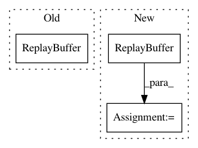

bbbb4282d5c5f8d5766be6f2cf9444d35e78da4e,reagent/test/replay_memory/circular_replay_buffer_test.py,ReplayBufferTest,testSampleTransitionBatchExtra,#ReplayBufferTest#,237
Before Change
def testSampleTransitionBatchExtra(self):
replay_capacity = 10
memory = circular_replay_buffer.ReplayBuffer(
observation_shape=OBSERVATION_SHAPE,
stack_size=1,
replay_capacity=replay_capacity,
batch_size=2,
extra_storage_types=[
circular_replay_buffer.ReplayElement("extra1", [], np.float32),
circular_replay_buffer.ReplayElement("extra2", [2], np.int8),
],
)
num_adds = 50 // The number of transitions to add to the memory.
for i in range(num_adds):
memory.add(
np.full(OBSERVATION_SHAPE, i, dtype=OBS_DTYPE),
After Change
def testSampleTransitionBatchExtra(self):
replay_capacity = 10
memory = circular_replay_buffer.ReplayBuffer(
stack_size=1, replay_capacity=replay_capacity, batch_size=2
)
num_adds = 50 // The number of transitions to add to the memory.
for i in range(num_adds):
memory.add(
observation=np.full(OBSERVATION_SHAPE, i, dtype=OBS_DTYPE),
In pattern: SUPERPATTERN
Frequency: 3
Non-data size: 3
Instances
Project Name: facebookresearch/Horizon
Commit Name: bbbb4282d5c5f8d5766be6f2cf9444d35e78da4e
Time: 2020-07-15
Author: kaiwenw@fb.com
File Name: reagent/test/replay_memory/circular_replay_buffer_test.py
Class Name: ReplayBufferTest
Method Name: testSampleTransitionBatchExtra
Project Name: facebookresearch/Horizon
Commit Name: bbbb4282d5c5f8d5766be6f2cf9444d35e78da4e
Time: 2020-07-15
Author: kaiwenw@fb.com
File Name: reagent/test/replay_memory/circular_replay_buffer_test.py
Class Name: ReplayBufferTest
Method Name: testExtraAdd
Project Name: chainer/chainerrl
Commit Name: 61f349b99c956c719d6620dfbea557df8c15cf0a
Time: 2017-03-02
Author: kataoka@preferred.jp
File Name: examples/gym/train_dqn_gym.py
Class Name:
Method Name: main